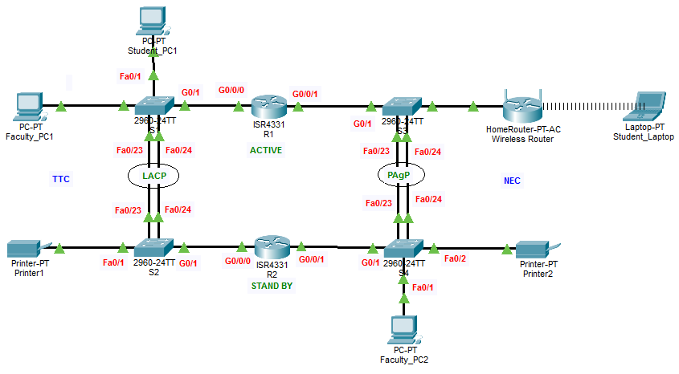

- Basic settings on all devices
- SSH configuration for secure access
- Create Data VLANs, Native VLAN, Management VLAN, and assign unused ports to another VLAN
- Connect a Wireless LAN
- Configure EtherChannel between switches
- Provide IP addresses to all end devices using DHCP
- Implement HSRP Operation
- Implement Inter-VLAN routing using either Router-on-a-Stick or Layer 3 Switching

| VLAN # | VLAN NAME |
|---|---|
| VLAN 10 | Students |
| VLAN 20 | Faculty |
| VLAN 30 | Printers |
| VLAN 40 | Management |
| VLAN 99 | Native |
| VLAN 999 | Parking_Lot |
| TTC | ||||
|---|---|---|---|---|
| VLAN # | VLAN NAME | NO# OF HOSTS | NETWORK ADDRESS | SUBNET MASK |
| VLAN 10 | Students | 120 | 192.168.1.0 | 255.255.255.128 |
| VLAN 20 | Faculty | 58 | 192.168.1.128 | 255.255.255.192 |
| VLAN 30 | Printers | 6 | 192.168.1.192 | 255.255.255.248 |
| VLAN 40 | Management | 6 | 192.168.1.200 | 255.255.255.248 |
| VLAN 99 | Native | NOT APPLICABLE | ||
| VLAN 999 | Parking_Lot | NOT APPLICABLE | ||
| NEC | ||||
| VLAN # | VLAN NAME | NO# OF HOSTS | NETWORK ADDRESS | SUBNET MASK |
| VLAN 10 | Students | 60 | 172.16.1.0 | 255.255.255.192 |
| VLAN 20 | Faculty | 60 | 172.16.1.64 | 255.255.255.192 |
| VLAN 30 | Printers | 60 | 172.16.1.128 | 255.255.255.192 |
| VLAN 40 | Management | 60 | 172.16.1.192 | 255.255.255.192 |
| VLAN 99 | Native | NOT APPLICABLE | ||
| VLAN 999 | Parking_Lot | NOT APPLICABLE | ||
| Device | Interface | IP Address | Subnet Mask | Default Gateway |
|---|---|---|---|---|
| R1 | G0/0/0.10 | 192.168.1.2 | 255.255.255.128 | NOT APPLICABLE |
| G0/0/0.20 | 192.168.1.130 | 255.255.255.192 | NOT APPLICABLE | |
| G0/0/0.30 | 192.168.1.194 | 255.255.255.248 | NOT APPLICABLE | |
| G0/0/0.40 | 192.168.1.202 | 255.255.255.248 | NOT APPLICABLE | |
| G0/0/1.10 | 172.16.1.2 | 255.255.255.192 | NOT APPLICABLE | |
| G0/0/1.20 | 172.16.1.66 | 255.255.255.192 | NOT APPLICABLE | |
| G0/0/1.30 | 172.16.1.130 | 255.255.255.192 | NOT APPLICABLE | |
| G0/0/1.40 | 172.16.1.194 | 255.255.255.192 | NOT APPLICABLE | |
| R2 | G0/0/0.10 | 192.168.1.3 | 255.255.255.128 | NOT APPLICABLE |
| G0/0/0.20 | 192.168.1.131 | 255.255.255.192 | NOT APPLICABLE | |
| G0/0/0.30 | 192.168.1.195 | 255.255.255.248 | NOT APPLICABLE | |
| G0/0/0.40 | 192.168.1.203 | 255.255.255.248 | NOT APPLICABLE | |
| G0/0/1.10 | 172.16.1.3 | 255.255.255.192 | NOT APPLICABLE | |
| G0/0/1.20 | 172.16.1.67 | 255.255.255.192 | NOT APPLICABLE | |
| G0/0/1.30 | 172.16.1.131 | 255.255.255.192 | NOT APPLICABLE | |
| G0/0/1.40 | 172.16.1.195 | 255.255.255.192 | NOT APPLICABLE | |
| S1 | VLAN 30 | 192.168.1.204 | 255.255.255.248 | 192.168.1.201 |
| S2 | VLAN 30 | 192.168.1.205 | 255.255.255.248 | 192.168.1.201 |
| S3 | VLAN 30 | 172.16.1.196 | 255.255.255.192 | 172.16.1.193 |
| S4 | VLAN 30 | 172.16.1.197 | 255.255.255.192 | 172.16.1.193 |
| Student_PC1 | NIC | DHCP | ||
| Faculty_PC1 | NIC | DHCP | ||
| Printer1 | NIC | 192.168.1.196 | 255.255.255.248 | 192.168.1.193 |
| Student_Laptop | NIC | DHCP | ||
| Faculty_PC2 | NIC | DHCP | ||
| Printer2 | NIC | 172.16.1.132 | 255.255.255.192 | 172.16.1.129 |
Router>enable Router#clock set 10:30:15 01 March 2026 Router#conf t Router(config)#hostname R1 R1(config)#no ip domain-lookup R1(config)#ip domain-name nttftrg.com R1(config)#enable password cisco R1(config)#enable secret itsasecret R1(config)#service password-encryption R1(config)#username admin secret admin R1(config)#line console 0 R1(config-line)#logging synchronous R1(config-line)#exec-timeout 5 R1(config-line)#password cisco R1(config-line)#login R1(config-line)#line vty 0 15 R1(config-line)#transport input ssh R1(config-line)#logging synchronous R1(config-line)#exec-timeout 5 R1(config-line)#login local R1(config-line)#crypto key generate rsa 1024 R1(config)#ip ssh version 2 R1(config)#interface G0/0/0.10 R1(config-subif)#encapsulation dot1q 10 R1(config-subif)#description Sub-Interface for VLAN 10 R1(config-subif)#ip address 192.168.1.2 255.255.255.128 R1(config-subif)#interface G0/0/0.20 R1(config-subif)#encapsulation dot1q 20 R1(config-subif)#description Sub-Interface for VLAN 20 R1(config-subif)#ip address 192.168.1.130 255.255.255.192 R1(config-subif)#interface G0/0/0.30 R1(config-subif)#encapsulation dot1q 30 R1(config-subif)#description Sub-Interface for VLAN 30 R1(config-subif)#ip address 192.168.1.194 255.255.255.248 R1(config-subif)#interface G0/0/0.40 R1(config-subif)#encapsulation dot1q 40 R1(config-subif)#description Sub-Interface for VLAN 40 R1(config-subif)#ip address 192.168.1.202 255.255.255.248 R1(config-subif)#interface G0/0/0.99 R1(config-subif)#description Sub-Interface for Native VLAN 99 R1(config-subif)#encapsulation dot1q 99 native R1(config-subif)#interface G0/0/1.10 R1(config-subif)#encapsulation dot1q 10 R1(config-subif)#description Sub-Interface for VLAN 10 R1(config-subif)#ip address 172.16.1.2 255.255.255.192 R1(config-subif)#interface G0/0/1.20 R1(config-subif)#encapsulation dot1q 20 R1(config-subif)#description Sub-Interface for VLAN 20 R1(config-subif)#ip address 172.16.1.66 255.255.255.192 R1(config-subif)#interface G0/0/1.30 R1(config-subif)#encapsulation dot1q 30 R1(config-subif)#description Sub-Interface for VLAN 30 R1(config-subif)#ip address 172.16.1.130 255.255.255.192 R1(config-subif)#interface G0/0/1.40 R1(config-subif)#encapsulation dot1q 40 R1(config-subif)#description Sub-Interface for VLAN 40 R1(config-subif)#ip address 172.16.1.194 255.255.255.192 R1(config-subif)#interface G0/0/1.99 R1(config-subif)#description Sub-Interface for Native VLAN 99 R1(config-subif)#encapsulation dot1q 99 native R1(config-subif)#interface range g0/0/0-1 R1(config-if-range)#no shutdown R1(config)#interface g0/0/0.10 R1(config-subif)#standby version 2 R1(config-subif)#standby 10 ip 192.168.1.1 R1(config-subif)#standby 10 priority 255 R1(config-subif)#standby 10 preempt R1(config-subif)#interface g0/0/0.20 R1(config-subif)#standby version 2 R1(config-subif)#standby 20 ip 192.168.1.129 R1(config-subif)#standby 20 priority 255 R1(config-subif)#standby 20 preempt R1(config-subif)#interface g0/0/0.30 R1(config-subif)#standby version 2 R1(config-subif)#standby 30 ip 192.168.1.193 R1(config-subif)#standby 30 priority 255 R1(config-subif)#standby 30 preempt R1(config-subif)#interface g0/0/0.40 R1(config-subif)#standby version 2 R1(config-subif)#standby 40 ip 192.168.1.201 R1(config-subif)#standby 40 priority 255 R1(config-subif)#standby 40 preempt R1(config-subif)#interface g0/0/1.10 R1(config-subif)#standby version 2 R1(config-subif)#standby 10 ip 172.16.1.1 R1(config-subif)#standby 10 priority 255 R1(config-subif)#standby 10 preempt R1(config-subif)#interface g0/0/1.20 R1(config-subif)#standby version 2 R1(config-subif)#standby 20 ip 172.16.1.65 R1(config-subif)#standby 20 priority 255 R1(config-subif)#standby 20 preempt R1(config-subif)#interface g0/0/1.30 R1(config-subif)#standby version 2 R1(config-subif)#standby 30 ip 172.16.1.129 R1(config-subif)#standby 30 priority 255 R1(config-subif)#standby 30 preempt R1(config-subif)#interface g0/0/1.40 R1(config-subif)#standby version 2 R1(config-subif)#standby 40 ip 172.16.1.193 R1(config-subif)#standby 40 priority 255 R1(config-subif)#standby 40 preempt R1(config)#ip dhcp excluded-address 192.168.1.1 192.168.1.3 R1(config)#ip dhcp excluded-address 192.168.1.129 192.168.1.131 R1(config)#ip dhcp excluded-address 172.16.1.1 172.16.1.3 R1(config)#ip dhcp excluded-address 172.16.1.65 172.16.1.67 R1(config)#ip dhcp pool DHCPTTCVLAN10 R1(dhcp-config)#network 192.168.1.0 255.255.255.128 R1(dhcp-config)#default-router 192.168.1.0 R1(dhcp-config)#dns-server 8.8.8.8 R1(dhcp-config)#domain-name nttf.co.in R1(dhcp-config)#ip dhcp pool DHCPTTCVLAN20 R1(dhcp-config)#network 192.168.1.128 255.255.255.192 R1(dhcp-config)#default-router 192.168.1.129 R1(dhcp-config)#dns-server 8.8.8.8 R1(dhcp-config)#domain-name nttf.co.in R1(dhcp-config)#ip dhcp pool DHCPNECVLAN10 R1(dhcp-config)#network 172.16.1.0 255.255.255.192 R1(dhcp-config)#default-router 172.16.1.1 R1(dhcp-config)#dns-server 8.8.8.8 R1(dhcp-config)#domain-name nttf.co.in R1(dhcp-config)#ip dhcp pool DHCPNECVLAN20 R1(dhcp-config)#network 172.16.1.64 255.255.255.192 R1(dhcp-config)#default-router 172.16.1.65 R1(dhcp-config)#dns-server 8.8.8.8 R1(dhcp-config)#domain-name nttf.co.in R1(dhcp-config)#end R1#copy run start
Router>enable Router#clock set 10:30:15 01 March 2026 Router#conf t Router(config)#hostname R2 R2(config)#no ip domain-lookup R2(config)#ip domain-name nttftrg.com R2(config)#enable password cisco R2(config)#enable secret itsasecret R2(config)#service password-encryption R2(config)#username admin secret admin R2(config)#line console 0 R2(config-line)#logging synchronous R2(config-line)#exec-timeout 5 R2(config-line)#password cisco R2(config-line)#login R2(config-line)#line vty 0 15 R2(config-line)#transport input ssh R2(config-line)#logging synchronous R2(config-line)#exec-timeout 5 R2(config-line)#login local R2(config-line)#crypto key generate rsa 1024 R2(config)#ip ssh version 2 R2(config)#interface G0/0/0.10 R2(config-subif)#encapsulation dot1q 10 R2(config-subif)#description Sub-Interface for VLAN 10 R2(config-subif)#ip address 192.168.1.3 255.255.255.128 R2(config-subif)#interface G0/0/0.20 R2(config-subif)#encapsulation dot1q 20 R2(config-subif)#description Sub-Interface for VLAN 20 R2(config-subif)#ip address 192.168.1.131 255.255.255.192 R2(config-subif)#interface G0/0/0.30 R2(config-subif)#encapsulation dot1q 30 R2(config-subif)#description Sub-Interface for VLAN 30 R2(config-subif)#ip address 192.168.1.195 255.255.255.248 R2(config-subif)#interface G0/0/0.40 R2(config-subif)#encapsulation dot1q 40 R2(config-subif)#description Sub-Interface for VLAN 40 R2(config-subif)#ip address 192.168.1.203 255.255.255.248 R2(config-subif)#interface G0/0/0.99 R2(config-subif)#description Sub-Interface for Native VLAN 99 R2(config-subif)#encapsulation dot1q 99 native R2(config-subif)#interface G0/0/1.10 R2(config-subif)#encapsulation dot1q 10 R2(config-subif)#description Sub-Interface for VLAN 10 R2(config-subif)#ip address 172.16.1.3 255.255.255.192 R2(config-subif)#interface G0/0/1.20 R2(config-subif)#encapsulation dot1q 20 R2(config-subif)#description Sub-Interface for VLAN 20 R2(config-subif)#ip address 172.16.1.67 255.255.255.192 R2(config-subif)#interface G0/0/1.30 R2(config-subif)#encapsulation dot1q 30 R2(config-subif)#description Sub-Interface for VLAN 30 R2(config-subif)#ip address 172.16.1.131 255.255.255.192 R2(config-subif)#interface G0/0/1.40 R2(config-subif)#encapsulation dot1q 40 R2(config-subif)#description Sub-Interface for VLAN 40 R2(config-subif)#ip address 172.16.1.195 255.255.255.192 R2(config-subif)#interface G0/0/1.99 R2(config-subif)#description Sub-Interface for Native VLAN 99 R2(config-subif)#encapsulation dot1q 99 native R2(config-subif)#interface range g0/0/0-1 R2(config-if-range)#no shutdown R2(config)#interface g0/0/0.10 R2(config-subif)#standby version 2 R2(config-subif)#standby 10 ip 192.168.1.1 R2(config-subif)#interface g0/0/0.20 R2(config-subif)#standby version 2 R2(config-subif)#standby 20 ip 192.168.1.129 R2(config-subif)#interface g0/0/0.30 R2(config-subif)#standby version 2 R2(config-subif)#standby 30 ip 192.168.1.193 R2(config-subif)#interface g0/0/0.40 R2(config-subif)#standby version 2 R2(config-subif)#standby 40 ip 192.168.1.201 R2(config-subif)#interface g0/0/1.10 R2(config-subif)#standby version 2 R2(config-subif)#standby 10 ip 172.16.1.1 R2(config-subif)#interface g0/0/1.20 R2(config-subif)#standby version 2 R2(config-subif)#standby 20 ip 172.16.1.65 R2(config-subif)#interface g0/0/1.30 R2(config-subif)#standby version 2 R2(config-subif)#standby 30 ip 172.16.1.129 R2(config-subif)#interface g0/0/1.40 R2(config-subif)#standby version 2 R2(config-subif)#standby 40 ip 172.16.1.193 R2(config)#ip dhcp excluded-address 192.168.1.1 192.168.1.3 R2(config)#ip dhcp excluded-address 192.168.1.129 192.168.1.131 R2(config)#ip dhcp excluded-address 172.16.1.1 172.16.1.3 R2(config)#ip dhcp excluded-address 172.16.1.65 172.16.1.67 R2(config)#ip dhcp pool DHCPTTCVLAN10 R2(dhcp-config)#network 192.168.1.0 255.255.255.128 R2(dhcp-config)#default-router 192.168.1.0 R2(dhcp-config)#dns-server 8.8.8.8 R2(dhcp-config)#domain-name nttf.co.in R2(dhcp-config)#ip dhcp pool DHCPTTCVLAN20 R2(dhcp-config)#network 192.168.1.128 255.255.255.192 R2(dhcp-config)#default-router 192.168.1.129 R2(dhcp-config)#dns-server 8.8.8.8 R2(dhcp-config)#domain-name nttf.co.in R2(dhcp-config)#ip dhcp pool DHCPNECVLAN10 R2(dhcp-config)#network 172.16.1.0 255.255.255.192 R2(dhcp-config)#default-router 172.16.1.1 R2(dhcp-config)#dns-server 8.8.8.8 R2(dhcp-config)#domain-name nttf.co.in R2(dhcp-config)#ip dhcp pool DHCPNECVLAN20 R2(dhcp-config)#network 172.16.1.64 255.255.255.192 R2(dhcp-config)#default-router 172.16.1.65 R2(dhcp-config)#dns-server 8.8.8.8 R2(dhcp-config)#domain-name nttf.co.in R2(dhcp-config)#end R2#copy run start
Switch>enable Switch#clock set 10:30:15 01 March 2026 Switch#conf t Switch(config)#hostname S1 S1(config)#no ip domain-lookup S1(config)#ip domain-name nttftrg.com S1(config)#enable password cisco S1(config)#enable secret itsasecret S1(config)#service password-encryption S1(config)#username admin secret admin S1(config)#line console 0 S1(config-line)#logging synchronous S1(config-line)#exec-timeout 5 S1(config-line)#password cisco S1(config-line)#login S1(config-line)#line vty 0 15 S1(config-line)#transport input ssh S1(config-line)#logging synchronous S1(config-line)#exec-timeout 5 S1(config-line)#login local S1(config-line)#crypto key generate rsa 1024 S1(config)#ip ssh version 2 S1(config)#VLAN 10 S1(config-vlan)#name Students S1(config-vlan)#VLAN 20 S1(config-vlan)#name Faculty S1(config-vlan)#VLAN 30 S1(config-vlan)#name Printers S1(config-vlan)#VLAN 40 S1(config-vlan)#name Management S1(config-vlan)#VLAN 99 S1(config-vlan)#name Native S1(config-vlan)#VLAN 999 S1(config-vlan)#name Parking_Lot S1(config-vlan)#interface vlan 40 S1(config-if)#ip address 192.168.1.204 255.255.255.248 S1(config-if)#exit S1(config)#ip default-gateway 192.168.1.201 S1(config)#interface range fa0/23-24,g0/1 S1(config-if-range)#switchport mode trunk S1(config-if-range)#switchport nonegotiate S1(config-if-range)#switchport trunk native vlan 99 S1(config-if-range)#switchport trunk allowed vlan 10,20,30,40,99 S1(config-if-range)#interface range fa0/23-24 S1(config-if-range)#description Etherchannel S1(config-if-range)#channel-group 1 mode active S1(config-if-range)#interface range fa0/3-22,g0/2 S1(config-if-range)#description Unused Port S1(config-if-range)#switchport mode access S1(config-if-range)#switchport access vlan 999 S1(config-if-range)#shutdown S1(config-if-range)#interface fa0/1 S1(config-if)#description Student S1(config-if)#switchport mode access S1(config-if)#switchport access vlan 10 S1(config-if)#interface fa0/2 S1(config-if)#description Faculty S1(config-if)#switchport mode access S1(config-if)#switchport access vlan 20 S1(config-if)#end S1#copy runs start
Switch>enable Switch#clock set 10:30:15 01 March 2026 Switch#conf t Switch(config)#hostname S2 S2(config)#no ip domain-lookup S2(config)#ip domain-name nttftrg.com S2(config)#enable password cisco S2(config)#enable secret itsasecret S2(config)#service password-encryption S2(config)#username admin secret admin S2(config)#line console 0 S2(config-line)#logging synchronous S2(config-line)#exec-timeout 5 S2(config-line)#password cisco S2(config-line)#login S2(config-line)#line vty 0 15 S2(config-line)#transport input ssh S2(config-line)#logging synchronous S2(config-line)#exec-timeout 5 S2(config-line)#login local S2(config-line)#crypto key generate rsa 1024 S2(config)#ip ssh version 2 S2(config)#VLAN 10 S2(config-vlan)#name Students S2(config-vlan)#VLAN 20 S2(config-vlan)#name Faculty S2(config-vlan)#VLAN 30 S2(config-vlan)#name Printers S2(config-vlan)#VLAN 40 S2(config-vlan)#name Management S2(config-vlan)#VLAN 99 S2(config-vlan)#name Native S2(config-vlan)#VLAN 999 S2(config-vlan)#name Parking_Lot S2(config-vlan)#interface vlan 40 S2(config-if)#ip address 192.168.1.205 255.255.255.248 S2(config-if)#exit S2(config)#ip default-gateway 192.168.1.201 S2(config)#interface range fa0/23-24,g0/1 S2(config-if-range)#switchport mode trunk S2(config-if-range)#switchport nonegotiate S2(config-if-range)#switchport trunk native vlan 99 S2(config-if-range)#switchport trunk allowed vlan 10,20,30,40,99 S2(config-if-range)#interface range fa0/23-24 S2(config-if-range)#description Etherchannel S2(config-if-range)#channel-group 1 mode active S2(config-if-range)#interface range fa0/2-22,g0/2 S2(config-if-range)#description Unused Port S2(config-if-range)#switchport mode access S2(config-if-range)#switchport access vlan 999 S2(config-if-range)#shutdown S2(config-if-range)#interface fa0/1 S2(config-if)#description Printer S2(config-if)#switchport mode access S2(config-if)#switchport access vlan 30 S2(config-if)#end S2#copy run start
Switch>enable Switch#clock set 10:30:15 01 March 2026 Switch#conf t Switch(config)#hostname S3 S3(config)#no ip domain-lookup S3(config)#ip domain-name nttftrg.com S3(config)#enable password cisco S3(config)#enable secret itsasecret S3(config)#service password-encryption S3(config)#username admin secret admin S3(config)#line console 0 S3(config-line)#logging synchronous S3(config-line)#exec-timeout 5 S3(config-line)#password cisco S3(config-line)#login S3(config-line)#line vty 0 15 S3(config-line)#transport input ssh S3(config-line)#logging synchronous S3(config-line)#exec-timeout 5 S3(config-line)#login local S3(config-line)#crypto key generate rsa 1024 S3(config)#ip ssh version 2 S3(config)#VLAN 10 S3(config-vlan)#name Students S3(config-vlan)#VLAN 20 S3(config-vlan)#name Faculty S3(config-vlan)#VLAN 30 S3(config-vlan)#name Printers S3(config-vlan)#VLAN 40 S3(config-vlan)#name Management S3(config-vlan)#VLAN 99 S3(config-vlan)#name Native S3(config-vlan)#VLAN 999 S3(config-vlan)#name Parking_Lot S3(config-vlan)#interface vlan 40 S3(config-if)#ip address 172.16.1.196 255.255.255.192 S3(config-if)#exit S3(config)#ip default-gateway 172.16.1.193 S3(config)#interface range fa0/23-24,g0/1 S3(config-if-range)#switchport mode trunk S3(config-if-range)#switchport nonegotiate S3(config-if-range)#switchport trunk native vlan 99 S3(config-if-range)#switchport trunk allowed vlan 10,20,30,40,99 S3(config)#interface GigabitEthernet0/2 S3(config-if)#switchport mode access S3(config-if)#description Student VLAN10 S3(config-if)#switchport access vlan 10 S3(config-if)#interface range fa0/23-24 S3(config-if-range)#description Etherchannel S3(config-if-range)#channel-group 1 mode desirable S3(config-if-range)#interface range fa0/1-22 S3(config-if-range)#description Unused Port S3(config-if-range)#switchport mode access S3(config-if-range)#switchport access vlan 999 S3(config-if-range)#shutdown S3(config-if-range)#end S3#copy run start
Switch>enable Switch#clock set 10:30:15 01 March 2026 Switch#conf t Switch(config)#hostname S4 S4(config)#no ip domain-lookup S4(config)#ip domain-name nttftrg.com S4(config)#enable password cisco S4(config)#enable secret itsasecret S4(config)#service password-encryption S4(config)#username admin secret admin S4(config)#line console 0 S4(config-line)#logging synchronous S4(config-line)#exec-timeout 5 S4(config-line)#password cisco S4(config-line)#login S4(config-line)#line vty 0 15 S4(config-line)#transport input ssh S4(config-line)#logging synchronous S4(config-line)#exec-timeout 5 S4(config-line)#login local S4(config-line)#crypto key generate rsa 1024 S4(config)#ip ssh version 2 S4(config)#VLAN 10 S4(config-vlan)#name Students S4(config-vlan)#VLAN 20 S4(config-vlan)#name Faculty S4(config-vlan)#VLAN 30 S4(config-vlan)#name Printers S4(config-vlan)#VLAN 40 S4(config-vlan)#name Management S4(config-vlan)#VLAN 99 S4(config-vlan)#name Native S4(config-vlan)#VLAN 999 S4(config-vlan)#name Parking_Lot S4(config-vlan)#interface vlan 40 S4(config-if)#ip address 172.16.1.197 255.255.255.192 S4(config-if)#exit S4(config-vlan)#ip default-gateway 172.16.1.193 S4(config-vlan)#interface range fa0/23-24,g0/1 S4(config-if-range)#switchport mode trunk S4(config-if-range)#switchport nonegotiate S4(config-if-range)#switchport trunk native vlan 99 S4(config-if-range)#switchport trunk allowed vlan 10,20,30,40,99 S4(config-if-range)#interface fa0/1 S4(config-if)#description Faculty VLAN20 S4(config-if)#switchport mode access S4(config-if)#switchport access vlan 20 S4(config-if)#interface fa0/2 S4(config-if)#description Printer 30 S4(config-if)#switchport mode access S4(config-if)#switchport access vlan 30 S4(config-if)#interface range fa0/23-24 S4(config-if-range)#description Etherchannel S4(config-if-range)#channel-group 1 mode desirable S4(config-if-range)#interface range fa0/3-22,g0/2 S4(config-if-range)#description Unused Port S4(config-if-range)#switchport mode access S4(config-if-range)#switchport access vlan 999 S4(config-if-range)#shutdown S4(config-if-range)#end S4#copy run start
IP Address: DHCP
IP Address: DHCP
IP Address: 192.168.1.196 Subnet Mask: 255.255.255.248 Default-Gateway: 192.168.1.193
IP Address: DHCP
IP Address: DHCP
IP Address: 172.16.1.132 Subnet Mask: 255.255.255.192 Default-Gateway: 172.16.1.129
R1#show standby R1#show standby brief R1#show ip interface brief R1#show ip route R1#show ip dhcp binding S1#show vlan brief S1#show interfaces trunk S1#show etherchannel summaryNote: To verify HSRP functionality, shut down Router R1 (Active) and confirm that Router R2 transitions to the Active state, ensuring uninterrupted communication between network devices.
Successfully designed and configured a complete network topology with IPv4/IPv6 addressing, secure SSH access, VLAN segmentation, wireless connectivity, EtherChannel, DHCP, HSRP, and Inter-VLAN routing.